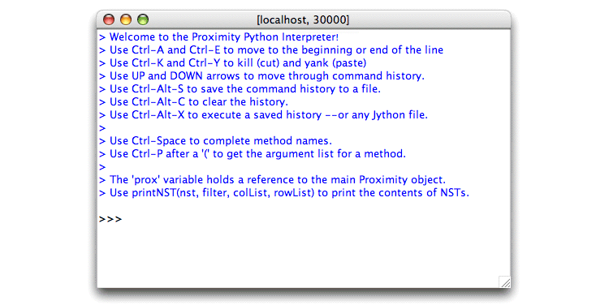

Proximity also lets you execute Python statements interactively
from a special Python interpreter. The interpreter provides the same
access to Proximity methods and to the special prox
object available in the other scripting interfaces.
The interpreter is a complete Jython interpreter and behaves in much the same way as the command line Python interpreter:
-
Variables defined during an interpreter session remain available for use in later commands until you close the interpreter window. New interpreter windows have a separate namespace; variables defined in one interpreter window are not available in another.
-
Nested blocks are indented as usual. You must indent lines with tabs. As in other Python environments, all statements in a single block must be indented consistently.
Method name completion
The Proximity Python interpreter provides method name completion for command lines that begin with a variable name. Press Ctrl-Space to display a menu of possible methods for the current context. For example:
-
Enter
prox.followed by Ctrl-Space to show all the methods in theProximityclass. (Note the trailing period.) -
Enter
prox.addfollowed by Ctrl-Space to show all the methods in theProximityclass that begin with"add". -
Enter
prox.addAfollowed by Ctrl-Space to complete the command line with the onlyProximityclass method that begins with"addA"(addAttribute()).
Method name completion works for variables other than the
prox object and can be invoked recursively. For
example, typing prox.getContainer(). followed by
Ctrl-Space displays the methods in the
Container class.
Parameter lists
Use Ctrl-P (after an opening parenthesis) to
display a menu of parameter overloads for the current method. For
example, typing prox.addAttribute( followed by
Ctrl-P shows the two signatures for the
addAttribute() method.
![[Caution]](images/caution.png) |
|
|
Method name completion and parameter list display are enabled only for command lines that begin with a variable name. They do not work for variables elsewhere on the command line. |
Command line history and editing
The Proximity Python interpreter also includes selected functionality for working with the command-line history and editing the current command line. The key bindings for command-line editing in the Proximity Python interpreter follow those used for command-line editing in the bash and csh shells.
| Command | Description | Command | Description |
|---|---|---|---|
| Up arrow | Previous command in history | Down arrow | Next command in history |
| Right arrow, Ctrl-B | Move backward one character | Left arrow, Ctrl-F | Move forward one character |
| Ctrl-A | Move to beginning of line | Ctrl-E | Move to end of line |
| Del | Delete one character backward | Ctrl-D | Delete one character forward |
| Ctrl-K | Kill to end of line | Ctrl-Y | Paste contents of clipboard |
| Ctrl-Alt-S[a] | Save command history | Ctrl-Alt-C | Clear command history |
| Ctrl-Alt-X | Execute Jython file | ||
|
[a] The Mac OS X equivalent to Ctrl-Alt is Ctrl-Option. |
|||
After you have developed a sequence of commands for accomplishing a task, you can save the command history to a file for future use.
-
Use Ctrl-Alt-S to save the current command history to a file.
-
Use Ctrl-Alt-C to clear the command history. (Ctrl-Alt-C does not clear the interpreter window or change any variable values.)
-
Use Ctrl-Alt-X to execute a Jython file, such as a saved history file.
The Proximity Python interpreter runs in the same thread as the Proximity Database Browser. Statements that take a long time to execute will prevent interacting with the browser until execution finishes.
This exercise walks through a series of interactive Python commands that find objects with a specified attribute value. In this example, we find and explore objects with a value of ftp for the url_protocol attribute. The steps described below also show how to use the interpreter’s history, command-line editing, and completion features.
This exercise
illustrates two methods in the Proximity class
useful for exploring the information in a database:
find()
and browse().
The find() method searches for objects
whose attribute values match the specified pattern. This pattern
accepts the wildcards
_ (underscore, matches a single instance of any
character), and % (matches zero or more characters).
The browse() method opens a new browser window
to display the specified object or container.
Exercise 6.3. Running a script interactively:
Before beginning, make sure that you are serving the ProxWebKB database using Mserver. Start the Proximity Database Browser if it is not already running.
-
If the interactive Python interpreter window is not already open, choose Open Interpreter from the Script menu. Proximity opens a Proximity Python interpreter window.
 The initial Proximity Python interpreter window includes reminders of the keyboard commands for using the interpreter’s history, command-line editing, and completion features. (The
printNSTmethod operates on NSTs, an internal Proximity data structure described in “Working with Proximity Tables”. -
Use the
find()method to identify objects with an attribute value of ftp.-
In the Proximity Python interpreter, type
prox.and press Ctrl-Space. (Note the trailing period.) Proximity displays a menu of applicable methods in theProximityclass.
-
Choose
findfrom the menu. Proximity adds the method name to the current command line. -
Complete the method call by entering the pattern to match:
prox.find("%ftp%")The
%wildcards before and afterftpeach match zero or more characters; this pattern matches all attribute values that contain the string"ftp"anywhere in the value. -
Press Return.
Proximity returns a map (Python dictionary) with attribute names as keys and a list of object IDs that match the specified pattern for that attribute as the value for each key.
{url=[1086, 1087, 1088, 1089, 1091, 1092, 1093, 1094, 1095, 1096, 1097, 1098, 1099, 1100, 1101, 1102, 1103, 1104, 1105, 1106, 1107, 1108, 1109, 1110, 1111, 1112, 1113, 1114, 1115, 1116, 1117, 1118, 1119, 1120, 1121, 1122, 3448], url_protocol=[1091, 1092, 1093, 1094, 1095, 1096, 1097, 1098, 1099, 1100, 1101, 1102, 1103, 1104, 1105, 1106, 1107, 1108, 1109, 1110, 1111, 1112, 1113, 1114, 1115, 1116, 1117, 1118, 1119, 1120, 1121, 1122], url_server_info=[1086, 1087, 1088, 1089, 1091, 1092, 1093, 1094, 1095, 1096, 1097, 1098, 1099, 1100, 1101, 1102, 1103, 1104, 1105, 1106, 1107, 1108, 1109, 1110, 1111, 1112, 1113, 1114, 1115, 1116, 1117, 1118, 1119, 1120, 1121]}The returned value shows that three attributes (url, url_protocol, and url_server_info) have values that contain the string
"ftp". -
-
Edit the previous command to find only those objects whose url_protocol attribute has a value of ftp. We use an overload of the
find()method that accepts a second argument, the name of the attribute to search.-
Press the up arrow to display the previous command.
-
Use the arrow keys to change the cursor position so that it is immediately after the opening parenthesis.
-
Press Ctrl-K to delete all text from the cursor position to end of line. This text is placed on the clipboard and can be pasted with Ctrl-Y.
-
Press Ctrl-P to display a menu of parameter options for the
find()method.This time we use the
find()method that takes two strings as arguments. Press Return or Esc to clear the parameter list menu. -
Complete the command so that it now reads
prox.find("ftp","url_protocol")Note that this time we are searching for exact matches as the search pattern has no wildcards.
-
Press Return.
Proximity returns a map with the target attribute as the key and the list of object IDs with the specified attribute value as the value for that key.
{url_protocol=[1091, 1092, 1093, 1094, 1095, 1096, 1097, 1098, 1099, 1100, 1101, 1102, 1103, 1104, 1105, 1106, 1107, 1108, 1109, 1110, 1111, 1112, 1113, 1114, 1115, 1116, 1117, 1118, 1119, 1120, 1121, 1122]} -
-
Create and execute a file containing the most recent
findcommand.-
Press Ctrl-Alt-S to save the command history. Proximity displays the Open dialog. Save the history in the location of your choice.
-
Edit the saved file to remove the first
findcommand and assign the results of the remainingfindcommand to the variableftp_protocols. The file should now read# Proximity Interpreter History ftp_protocols=prox.find("ftp","url_protocol")Save the edited file.
-
In the Proximity Python interpreter, press Ctrl-Alt-C to clear the command history. Proximity displays a confirmation message in a pop-up window. Click OK to dismiss the confirmation message.
-
Press Ctrl-Alt-X to execute a saved Jython file. Proximity displays the Open dialog. Choose the file you just saved and edited. Proximity responds by printing and executing the
execfilecommand that runs the saved script file:>>> execfile("/proximity/saved-interpreter-history.py") -
To verify that the script completed successfully, enter
ftp_protocolsin the Proximity Python interpreter window and press Return. Proximity returns the value offtp_protocols.
-
-
Examine one of the listed objects.
-
In the Proximity Python interpreter window, enter
prox.band press Ctrl-Space. Proximity completes the method name (browse). -
Enter
(and press Ctrl-P to display the parameter options for thebrowse()method. This method takes either anint(object ID) orString(container name) as its argument. Press Return or Esc to dismiss the list of parameter options. -
Complete the command line to read
prox.browse(1091)and press Return.
Proximity displays object 1091 in a new browser window.
-
-
Click attrs to display the attribute values for object 1091 and confirm that the value of the url_protocol attribute is ftp.
Close the second browser window when you have finished exploring object 1091.